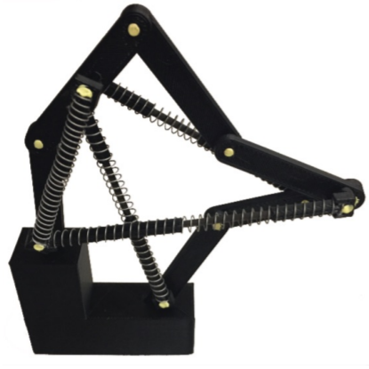

|
Gaurav Bharaj
Provides leadership, strategy, and research guidance to help build next-generation AI solution. Working at the intersection of vision, graphics, audio, and NLP, I lead scientists and engineers to deliver research-driven products in multi-modal neural human industries. I am passionate about harnessing advances in visual computing and generative AI technologies to empower and enhance human lives. Internship Opportunities: Always looking for strong PhD profiles with interest in 3D Computer Vision, Audio, and Natural Language Processing, please reach-out. |

|
Publications

|
Multi-Domain Multi-Definition Landmark Localization for Small Datasets
David Ferman, Gaurav Bharaj European Conference on Computer Vision (ECCV), 2022 |
|
Towards Device Efficient Conditional Image Generation
Nisarg A Shah, Gaurav Bharaj British Machine Vision Conference (BMVC), 2022 |
|

|
Generalized Spoofing Detection Inspired from Audio Generation Artifacts
Yang Gao, Tyler Vuong, Mahsa Elyasi, Gaurav Bharaj, Rita Singh InterSpeech, 2021 |

|
Generative Landmarks
David Ferman, Gaurav Bharaj Eurographics (Computer Graphics Forum) Poster, 2021 |
|
Practical Face Reconstruction via Differentiable Ray Tracing
Abdallah Dib, Gaurav Bharaj, Junghyun Ahn, Cedric Thebault, Philippe-Henri Gosselin, Marco Romeo, Louis Chevallier Eurographics (Computer Graphics Forum), 2021 |
|
|
Flavored Tacotron: Conditional Learning for Prosodic-linguistic Features
Mahsa Elyasi, Gaurav Bharaj arXiv: 2021 |
|

|
Grapheme-to-Phoneme Transformer Model for Transfer Learning Dialects
Eric Engelhart, Mahsa Elyasi, Gaurav Bharaj arXiv: 2021 |

|
Deep Digital Humans
Gaurav Bharaj NVIDIA Inception, 2020 |
|
StyleRig: Rigging StyleGAN for 3D Control over Portrait Images
Ayush Tewari, Mohamed Elgharib, Gaurav Bharaj, Florian Bernard, Hans-Peter Seidel, Patrick Pérez, Michael Zollhöfer, Christian Theobalt Computer Vision and Pattern Recognition (CVPR), 2020 (Oral) |
|
|
Identification of Neural-Network-Generated Fake Images
Matthias Niessner, Gaurav Bharaj US20200160502A1, 2020 |
|

|
Face Reflectance and Geometry Modeling via Differentiable Ray Tracing
Abdallah Dib, Gaurav Bharaj, Junghyun Ahn, Cedric Thebault, Philippe-Henri Gosselin, Louis Chevallier Conference on Visual Media Production (CVMP), 2019 |

|
FML: Face Model Learning from Videos
Ayush Tewari, Florian Bernard, Pablo Garrido, Gaurav Bharaj, Mohamed Elgharib, Hans-Peter Seidel, Patrick Pérez, Michael Zollhöfer, Christian Theobalt Computer Vision and Pattern Recognition (CVPR), 2019 (Oral) |
|  |
Metamorphs: Bistable Planar Structures
Gaurav Bharaj, Danny Kaufman, Etienne Vouga, Hanspeter Pfister Technical Report, 2018 |

|
Methods in Computational Design and Optimization
Gaurav Bharaj Ph.D. Thesis, 2017 |
|
Walking Machines
Bernd Bickel, Gaurav Bharaj, Bernhard Thomaszewski, Stelian Coros US20160059140A1, 2016 |
|

|
Computational Design of Metallophone Contact Sounds
Gaurav Bharaj, David Levin, James Tompkin, Yun Fei, Hanspeter Pfister, Wojciech Matusik & Changxi Zheng ACM Transactions on Graphics (SIGGRAPH Asia 2015), 34(6) |

|
Computational Design of Walking Automata
Gaurav Bharaj, Stelian Coros, Bernhard Thomaszewski, James Tompkin, Bernd Bickel & Hanspeter Pfister ACM SIGGRAPH / Eurographics Symposium on Computer Animation (SCA 2015) |

|
Personalization and Evaluation of a
Real-time Depth-based Full Body Tracker
Thomas Helten, Andreas Baak, Gaurav Bharaj, Meinard Müller, Hans-Peter Seidel & Christian Theobalt 3D Vision (3DV 2013) |

|
Automatically Rigging Multi-component Characters Gaurav Bharaj, Thorsten Thormählen, Hans-Peter Seidel & Christian Theobalt European Association for Computer Graphics (Eurographics 2012) |

|
A Data-Driven Approach for Real-Time Full Body Pose
Reconstruction from a Depth Camera Andreas Baak, Meinard Müller, Gaurav Bharaj, Hans-Peter Seidel & Christian Theobalt IEEE International Conference on Computer Vision (ICCV 2011) |

|
Video-based Characters - Creating New Human Performances
from a Multi-view Video Database Feng Xu, Yebin Liu, Carsten Stoll, James Tompkin, Gaurav Bharaj, Qionghai Dai, Hans-Peter Seidel, Jan Kautz & Christian Theobalt ACM Transactions on Graphics (SIGGRAPH 2011) |